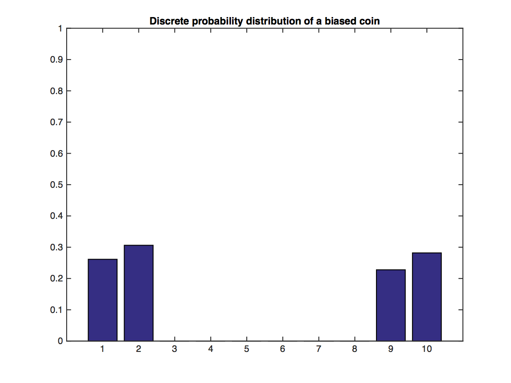
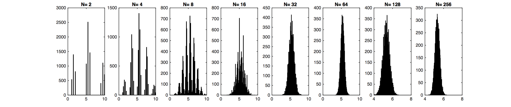
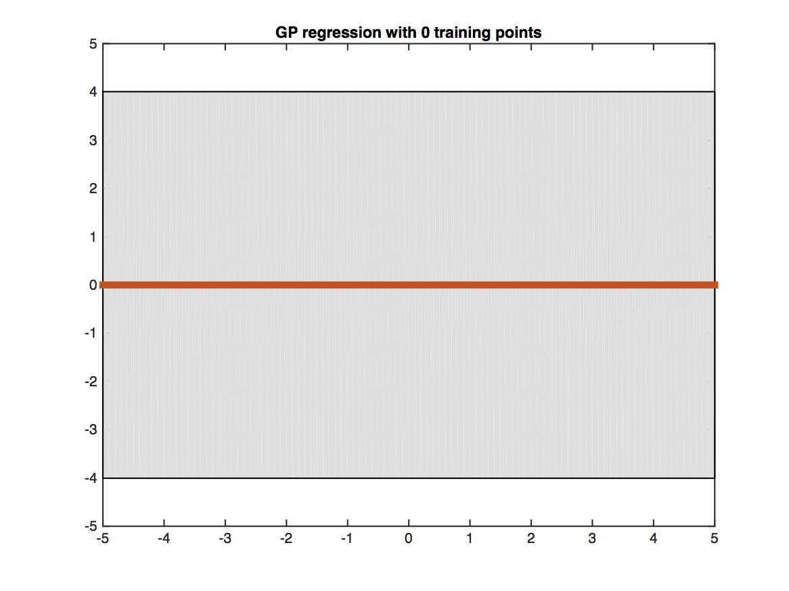
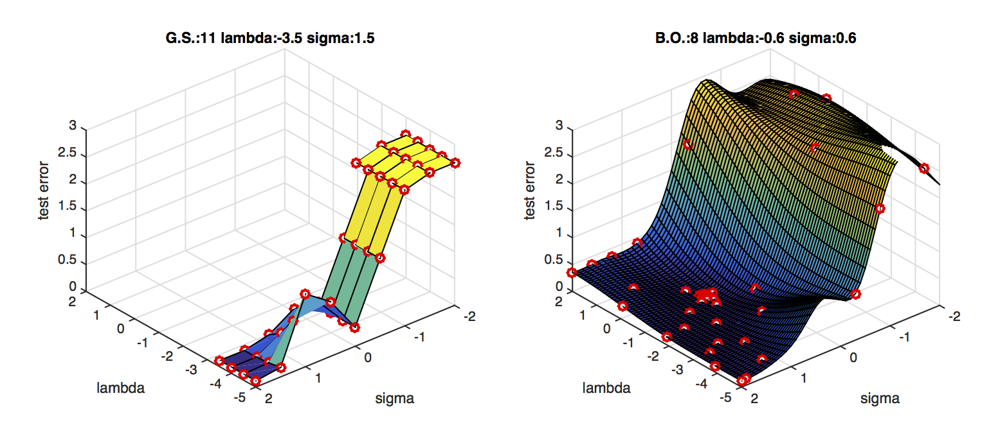

Lecture 15: Gaussian Processes
Properties of Multivariate Gaussian Distributions
We first review the definition and properties of Gaussian distribution:
A Gaussian random variable $X\sim \mathcal{N}(\mu,\Sigma)$, where $\mu$ is the mean and $\Sigma$ is the covariance matrix has the following probability density function:
$$P(x;\mu,\Sigma)=\frac{1}{(2\pi)^{\frac{d}{2}}|\Sigma|}e^{-\frac{1}{2}((x-\mu)^\top \Sigma^{-1}(x-\mu)}$$
where $|\Sigma|$ is the determinant of $\Sigma$.
The Gaussian distribution occurs very often in real world data. This is for a good reason: the Central Limit Theorem (CLT). The CLT states that the arithmetic mean of $m>0$ samples is approximately normal distributed - independent of the original sample distribution (provided it has finite mean and variance).


Illustration of the Central Limit Theorem: In the above graph, random variables $Y$ are drawn from the distribution illustrated through the bar plot. Values of 1,2 and 9,10 are likely, but 3-8 have no support. This distribution does not look Gaussian at all. However, their sample means, $\bar{Y}_j=\frac{1}{N}\sum_{i=1}^N y_i$, of which we sample $m$: $\bar{Y}_1,\dots,\bar{Y}_m$, become very "Gaussian" distributed as $N$ increases (lower plot).
Once Gaussian always Gaussian
Let Gaussian random variable $y=\begin{bmatrix} y_A\\ y_B \end{bmatrix}$, mean $\mu=\begin{bmatrix} \mu_A\\ \mu_B \end{bmatrix}$ and covariance matrix $\Sigma=\begin{bmatrix} \Sigma_{AA}, \Sigma_{AB} \\ \Sigma_{BA}, \Sigma_{BB} \end{bmatrix}$. We have the following properties:
1. Normalization:
$$\int_y p(y;\mu,\Sigma)dy=1 \;\;\;\text{(of course!)}$$
2. Marginalization: The marginal distributions $p(y_A)$$=\int_{y_B}p(y_A,y_B;\mu,\Sigma)dy_B$ and $p(y_B)=\int_{y_A}p(y_A,y_B;\mu,\Sigma)dy_A$ are Gaussian:
$$y_A\sim \mathcal{N}(\mu_A,\Sigma_{AA})$$
$$y_B\sim \mathcal{N}(\mu_B,\Sigma_{BB}).$$
3. Summation: If $y\sim \mathcal{N}(\mu,\Sigma)$ and $y'\sim \mathcal{N}(\mu',\Sigma')$, then
$$y+y'\sim \mathcal{N}(\mu+\mu',\Sigma+\Sigma').$$
4. Conditioning: The conditional distribution of $y_A$ on $y_B$ $$p(y_A|y_B)=\frac{p(y_A,y_B;\mu,\Sigma)}{\int_{y_A}p(y_A,y_B;\mu,\Sigma)dy_A},$$ is also Gaussian:
$$y_A|y_B=y_B\sim \mathcal{N}(\mu_A+\Sigma_{AB}\Sigma_{BB}^{-1}(y_B-\mu_B),\Sigma_{AA}-\Sigma_{AB}\Sigma_{BB}^{-1}\Sigma_{BA}).$$
This property will be useful in deriving Gaussian Process perdictions.
Gaussian Process Regression
Posterior Predictive Distribution
Consider a regression problem(s):
$$\begin{align}
y &= f(\mathbf{x}) + \epsilon \\
y &= \mathbf{w}^T \mathbf{x}+ \epsilon &\text{ (OLS and ridge regression)}\\
y &= \mathbf{w}^T \phi(\mathbf{x}) + \epsilon &\text{ (kernel ridge regression).}\\
\end{align}
$$
Recall our goal to estimate probabilities from data. So far, we have developed OLS and (kernel) ridge regression as a solution for regression problems. Those solutions give us a predictive model for one particular parameter $\mathbf{w}$.
In general, the posterior predictive distribution is
$$
P(Y\mid D,X) = \int_{\mathbf{w}}P(Y,\mathbf{w} \mid D,X) d\mathbf{w} = \int_{\mathbf{w}} P(Y \mid \mathbf{w}, D,X) P(\mathbf{w} \mid D) d\mathbf{w}
$$
Unfortunately, the above is often intractable in closed form. However, for the special case of having a Gaussian likelihood and prior (those are the ridge regression assumptions), this expression is Gaussian and we can derive its mean and covariance. So,
$$P(y_*\mid D,\mathbf{x}) \sim \mathcal{N}(\mu_{y_*\mid D}, \Sigma_{y_*\mid D}),$$
where
$$\mu_{y_*\mid D} = K_*^T (K+\sigma^2 I)^{-1} y$$
and
$$\Sigma_{y_*\mid D} = K_{**} - K_*^T (K+\sigma^2 I)^{-1}K_*.$$
So, instead of doing MAP (as in ridge regression) let's model the entire distribution and let's forget about $\mathbf{w}$ and the kernel trick by modelling $f$ directly (instead of $y$)!
Gaussian Processes - Definition
Problem: $f$ is an infinte dimensional function! But, the multivariate Gaussian distributions is for finite dimensional random vectors.
Definition: A GP is a (potentially infinte) collection of random variables (RV) such that the joing distribution of every finite subset of RVs is multivariate Gaussian:
$$f \sim GP(\mu, k), $$
where $\mu(\mathbf{x})$ and $k(\mathbf{x}, \mathbf{x'})$ are the mean resp. covariance function!
Now, in order to model the predictive distribution $P(f_* \mid \mathbf{x}_*, D)$ we can use a Bayesian approach by using a GP prior: $P(f\mid \mathbf{x}) - \mathcal{N}(\mu, \Sigma)$ and condition it on the training data $D$. to model the joint distribution of $f = f(X)$ (vector of training observations) and $f_* = f(\mathbf{x}_*)$ (prediction at test input).
Gaussian Process Regression (GPR)
We assume that, before we observe the training labels, the labels are drawn from the zero-mean prior Gaussian distribution:
$$
\begin{bmatrix}
y_1\\
y_2\\
\vdots\\
y_n\\
y_t
\end{bmatrix}
\sim \mathcal{N}(0,\Sigma)$$
W.l.o.g. zero-mean is always possible by subtracting sample mean.
All training and test labels are drawn from an $(n+m)$-dimension Gaussian distribution, where $n$ is the number of training points, $m$ is the number of testing points. Note that, the real training labels, $y_1,...,y_n$, we observe are samples of $Y_1,...,Y_n$.
Whether this distribution gives us meaningful distribution or not depends on how we choose the covariance matrix $\Sigma$. We consider the following properties of $\Sigma$:
1. $\Sigma_{ij}=E((Y_i-\mu_i)(Y_j-\mu_j))$.
2. $\Sigma$ is always positive semi-definite.
3. $\Sigma_{ii}=\text{Variance}(Y_i)$, thus $\Sigma_{ii}\geq 0$.
4. If $Y_i$ and $Y_j$ are very independent, i.e. $x_i$ is very different from $x_j$, then $\Sigma_{ij}=\Sigma_{ji}=0$.
5. If $x_i$ is similar to $x_j$, then $\Sigma_{ij}=\Sigma_{ji}>0$.
We can observe that this is very similar from the kernel matrix in SVMs. Therefore, we can simply let $\Sigma_{ij}=K(x_i,x_j)$. For example, if we use RBF kernel (aka "squared exponential kernel"), then
\begin{equation}
\Sigma_{ij}=\tau e^\frac{-\|x_i-x_j\|^2}{\sigma^2}.
\end{equation}
If we use polynomial kernel, then $\Sigma_{ij}=\tau (1+x_i^\top x_j)^d$.
Thus, we can decompose $\Sigma$ as $\begin{pmatrix} K, K_* \\K_*^\top , K_{**} \end{pmatrix}$, where $K$ is the training kernel matrix, $K_*$ is the training-testing kernel matrix, $K_*^\top $ is the testing-training kernel matrix and $K_{**}$ is the testing kernel matrix. The conditional distribution of (noise-free) values of the latent function $f$ can be written as:
\begin{equation}
f_*|(Y_1=y_1,...,Y_n=y_n,x_1,...,x_n,x_t)\sim \mathcal{N}(K_*^\top K^{-1}y,K_{**}-K_*^\top K^{-1}K_*),
\end{equation}
where the kernel matrices $K_*, K_{**}, K$ are functions of $x_1,\dots,x_n,x_*$.
Additive Gaussian Noise
In many applications the observed labels can be noisy. If we assume this noise is independent and zero-mean Gaussian, then we observe $\hat Y_i=f_i+\epsilon_i$, where $f_i$ is the true (unobserved=latent) target and the noise is denoted by $\epsilon_i\sim \mathcal{N}(0,\sigma^2)$. In this case the new covariance matrix becomes $\hat\Sigma=\Sigma+\sigma^2\mathbf{I}$. We can derive this fact first for the off-diagonal terms where $i\neq j$
\begin{equation}
\hat\Sigma_{ij}=\mathbb{E}[(f_i+\epsilon_i)(f_j+\epsilon_j)]=\mathbb{E}[f_if_j]+\mathbb{E}[f_i]\mathbb{E}[\epsilon_j]+\mathbb{E}[f_j]\mathbb{E}[\epsilon_i]+\mathbb{E}[\epsilon_i]\mathbb{E}[\epsilon_j]=\mathbb{E}[f_if_j]=\Sigma_{ij},
\end{equation}
as $\mathbb{E}[\epsilon_i]=\mathbb{E}[\epsilon_j]=0$ and where we use the fact that $\epsilon_i$ is independent from all other random variables.
For the diagonal entries of $\Sigma$, i.e. the case where $i=j$, we obtain
\begin{equation}
\hat\Sigma_{ii}=\mathbb{E}[(f_i+\epsilon_i)^2]=\mathbb{E}[f_i^2]+2\mathbb{E}[f_i]\mathbb{E}[\epsilon_i]+\mathbb{E}[\epsilon_i^2]=\mathbb{E}[f_if_j]+\mathbb{E}[\epsilon_i^2]=\Sigma_{ij}+\sigma^2,
\end{equation}
because $E[\epsilon_i^2]=\sigma^2$, which denotes the variance if $\epsilon_i$.
Plugging this updated covariance matrix into the Gaussian Process posterior distribution leads to
\begin{equation}
Y_*|(Y_1=y_1,...,Y_n=y_n,x_1,...,x_n)\sim \mathcal{N}(K_*^\top (K+\sigma^2 I)^{-1}y,K_{**}+\sigma^2 I-K_*^\top (K+\sigma^2 I)^{-1}K_*).\label{eq:GP:withnoise}
\end{equation}
In practice the above equation is often more stable because the matrix $(K+\sigma^2 I)$ is always invertible if $\sigma^2$ is sufficiently large.
So, for predictions we can use the posterior mean and additionally we get the predictive variance as measure of confidence or (un)certainty about the point prediction.
Practical Implementation
Cf. algorithm 2.1 in GPML CH 2 (p. 19).
Marginal likelihood and hyper-parameter learning
Even though GPR is a non-parametric model, the covariance function $K$ has parameters. Those parameters are so-called hyper-parameters and they need to be learned (=estimated) from the training data. Let $\mathbf{\theta}$ be the vector of all parameters of $K$, then $K = K_{\theta}$ and we can learn $\mathbf{\theta}$ by maximizing the marginal likelihood $P(y \mid X, \theta)$.
Cf. equations (2.28)-(2.30) in GPML CH 2 (p. 19). Once you have the marginal likelihood and its derivatives you can use any out-of-the-box solver such as (stochastic) Gradient descent, or conjugate gradient descent (Caution: minimize negative log marginal likelihood). Note that the marginal likelihood is not a convex function in its parameters and the solution is most likely a local minima / maxima. To make this procedure more robust, you can rerun your optimization algorithm with different initializations and pick the lowest/highest return value.
Covariance Functions - The heart of the GP model
GPs gain a lot of their predictive power by selecting the right covariance/kernel function. Selecting the covariance function is the model selection process in the GP learning phase. There are three different ways to come up with a good covariance function (cf. GPML CH 5):
- Expert knowledge (awesome to have -- difficult to get)
- Bayesian model selection (more possibly analytically intractable integrals!!)
- Cross-validation (time consuming -- but simple to implement)
One popular and powerful covariance function is the RBF with different length scales for each feature dimension.
$$k(\mathbf{x}, \mathbf{x'}) = \sigma_f^2 e^{-\frac{1}{2} (\mathbf{x}-\mathbf{x'})^T M (\mathbf{x}-\mathbf{x'})} + \sigma_n^2 \delta_{\mathbf{x},\mathbf{x'}},$$
with $M = diag(\ell)^{-2}$, where $\sigma_f^2$ is the signal variance, $\ell$ is a vector of length-scale parameters and $\sigma_n^2$ is the noise variance.
Summary
Gaussian Process Regression has the following properties:
- GPs are an elegant and powerful ML method
- We get a measure of (un)certainty for the predictions for free.
- GPs work very well for regression problems with small training data set sizes.
- Running time $O(n^3) \leftarrow $ matrix inversion (gets slow when $n\gg 0$) $\Rightarrow$ use sparse GPs for large $n$.
- GPs are a little bit more involved for classification (non-Gaussian likelihood).
- We can model non-Gaussian likelihoods in regression and do approximate inference for e.g., count data (Poisson distribution)
- GP implementations: GPML (MATLAB), GPys, pyGPs, and scikit-learn (Python)
Application: Bayesian Global Optimization
A nice applications of GP regression is Bayesian Global Optimization. Here, the goal is to optimize the hyper-parameters of a machine learning algorithm to do well on a fixed validation data set. Imagine you have $d$ hyper-parameters to tune, then your data set consists of $d-$dimensional vectors $x_i\in{\mathcal{R}}^d$, where each training point represents a particular hyper parameter setting and the labels $y_i\in{\mathcal R}$ represents the validation error.
Don't get confused, this time vectors $x_i$ correspond to hyperparameter settings and not data.
For example, in the case of an SVM with polynomial kernel you have two hyperparameters: the regularization constant $C$ (also often $\lambda$) and the polynomial power $p$. The first dimension of $x_i$ may correspond to a value for $C$ and the second dimension may correspond to a value of $p$.
Initially you train your classifier under a few random hyper-parameter settings and evaluate the classifier on the validation set. This gives you $x_1,\dots,x_m$ with labels $y_1,\dots,y_m$. You can now train a Gaussian Process to predict the validation error $y_t$ at any new hyperparameter setting $x_t$. In fact, you obtain a mean prediction $y_t=h(x_t)$ and its variance $v(x_t)$. If you have more time you can now explore a new point. The most promising point is the one with the lowest lower confidence bound, i.e.
\begin{equation}
\textrm{argmin}_{x_t} h(x_t)-\kappa\sqrt{v(x_t)}.
\end{equation}
The constant $\kappa>0$ trades off how much you want to explore points that may be good just because you are very uncertain (variance is high) or how much you want to exploit your knowledge about the current best point and refine the best settings found so far. A small $\kappa$ leads to more exploitation, whereas a large $\kappa$ explores new hyper-parameter settings more aggressively.
Algorithm:${\mathcal{A}},m,n,\kappa$
For $i$ = 1 to $m$
sample $x_i$ randomly e.g. sample uniformly within reasonable range
$y_i=\mathcal{A}(x_i)$ Compute validation error
EndFor
For $i$ = $m+1$ to $n$
Update kernel $K$ based on $x_1,\dots,x_{i-1}$
$x_i=\textrm{argmin}_{x_t} K_t^\top(K+\sigma^2 I)^{-1}y-\kappa\sqrt{K_{tt}+\sigma^2 I-K_t^\top (K+\sigma^2 I)^{-1}K_t}$
$y_i=\mathcal{A}(x_i)$ Compute validation error
Endfor
$i_{best}=\textrm{argmin}_{i} \{y_1,\dots,y_n\}$ Find best hyper-parameter setting explored.
Return $x_{i_{best}}$ Return best hyper-parameter setting explored.


The figure shows a Gaussian processes trained on four training points (black crosses) and evaluated on a dense grid within the [-5,5] interval. The red line shows the predicted mean value at each test point. The shaded gray region shows the uncertainty of the prediction (two standard deviations from the mean). Testing points that are closer to training points (i.e. have more similar features) obtain more certain predictions.

BO is much faster than grid search.